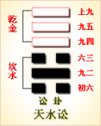

<!DOCTYPE html PUBLIC "-//W3C//DTD XHTML 1.0 Transitional//EN" "http://www.w3.org/TR/xhtml1/DTD/xhtml1-transitional.dtd">

<html xmlns="http://www.w3.org/1999/xhtml">
<head>
<meta content="text/html; charset=utf-8" http-equiv="Content-Type"/>
<title>周易第六卦：讼卦 天水�?乾上坎下原文解释翻译-周易-国学�?/title>
<meta content="周易,讼卦,天水�?乾上坎下" name="keywords"/>
<meta content="周易,讼卦,天水�?乾上坎下，周易第六卦：讼�?天水�?乾上坎下解释翻译�?（天水讼）乾上坎�?《讼》：有孚窒惕，中吉，终凶。利见大人。不利涉大川�?初六，不永所事，小有言，终吉�?九二，不克讼，归而逋。其邑人三百户，无眚�?六三，食旧德，贞�? name="description"/>
<link href="css.css" media="screen" rel="stylesheet" type="text/css"/>
</head>
<body>
<div class="gxlayout">
</div>
<div class="gxlayout">
<div class="ihead">
<div class="title"><a>周易</a></div>
<ul class="more fl">
<li>当前位置:<a>国学梦首�?/a> &gt; <a>国学经典</a> &gt; <a>经部</a> &gt; <a>四书五经</a> &gt; <a>周易</a> &gt;  周易第六卦：讼卦 天水�?乾上坎下原文解释翻译</li>
</ul>
</div>
<div class="gxbl fl">
<div class="latitle">

<h1>周易第六卦：讼卦 天水�?乾上坎下</h1>
<div class="lainfo"><span>作者：佚名</span> <span>全集�?a>周易</a></span> <span>来源：网�?/span> <span>[<a rel="nofollow" target="_blank">挑错/完善</a>]</span></div>
</div>
<div class="lacontent">
<div class="clearfix"></div>
<p style="text-align:center"></p>
<p style="text-align:center"><a>周易第六卦详�?/a></p>
<p style="text-align:center"><a>第六卦初六爻详解</a>　<a>第六卦九二爻详解</a>　<a>第六卦六三爻详解</a></p>
<p style="text-align:center"><a>第六卦九四爻详解</a>　<a>第六卦九五爻详解</a>　<a>第六卦上九爻详解</a></p>
<p><strong><a target="_blank">周易</a>第六�?�?天水�?乾上坎下</strong></p>
<p>讼：有孚，窒。惕中吉。终凶。利见大人，不利涉大川�?/p>
<p>彖曰：讼，上刚下险，险而健讼。讼有孚窒，惕中吉，刚来而得中也。终�?讼不可成也。利见大�?尚中正也。不利涉大川;入于渊也�?/p>
<p>象曰：天与水违行，讼;君子以作事谋始�?/p>
<p>初六：不永所事，小有言，终吉。象曰：�?永所事，讼不可长也。虽有小言，其辩明也�?/p>
<p>九二：不克讼，归而逋，其邑人三百户，无眚。象曰：不克讼，归而逋也。自下讼上，患至掇也�?/p>
<p>六三：食旧德，贞厉，终吉，或从王事，无成。象曰：食旧德，从上吉也�?/p>
<p>九四：不克讼，复自命，渝安贞，吉。象曰：复即命，渝安�?不失也�?/p>
<p>九五：讼元吉。象曰：讼元吉，以中正也�?/p>
<p>上九：或锡之鞶带，终朝三褫之。象曰：以讼受服，亦不足敬也�?/p>
<p> </p>
<p><strong><a href="06_讼卦.html" target="_blank">讼卦</a>卦象，天水讼卦的象征意义</strong></p>
<p><strong>讼卦�?a target="_blank">易经</a>64卦中的天水讼卦，讼卦有哪些具体的象征意义�?</strong></p>
<p>讼卦，这个卦是异卦相叠，下卦为坎，上卦为乾。乾为刚健，坎为险陷。刚与险，健与陷，彼此反对，定生争讼。争讼非善事，务必慎重戒惧�?/p>
<p>讼卦位于<a href="05_需�?html" target="_blank">需�?/a>之后，同需卦相反，互为“综卦”。《序卦》之中这样说道：“饮食必有讼，故受之以讼。”人与人之间因为争取需求而发生诉讼�?/p>
<p>《象》曰：天与水违行，讼;君子以作事谋始�?/p>
<p>《象》中这段话的意思是说：讼卦的卦象是�?�?下乾(�?上，为天在水上之表象。天从东向西转动，江河百川之水从西向东流，天与水是逆向相背而行的，象征着人们由于意见不合而打官司。所以君子在做事前要深思熟虑，从开始就要消除可能引起争端的因素�?/p>
<p>讼卦象征打官司，向人们启示了慎争戒讼的道理，属于中下卦。《象》中此卦的断语是：心中有事事难做，恰是二人争路走，雨下俱是要占先，谁肯让谁走一步�?/p>
<p>讼卦上卦为乾为天为阳，其性质向上，下卦为坎为水为阳，其性质向下，两卦同性相斥，并且天往上升，水往下流，目标相违背，这便是讼卦的卦象。这就好比人们各自怀着私心，都为自己的利益着想，思想不能统一起来。所以人们在争夺利益的同时，便会引发争斗，到头来只有通过沂讼进行解决了�?/p>
<p>讼卦之象，有口舌二字，为祸端起因;山下有睡虎，主有惊恐;文书在云中，主远而未兴讼;人立虎下，主到尾有惊。占者若得之，宜慎出入。此为俊鹰逐兔之卦�?/p>
<p>关键词：周易,讼卦,天水�?乾上坎下</p>
<div class="clearfix"></div>
<div class="title"><div class="thot">解释翻译</div><span>[挑错/完善]</span></div><p><a href="06_讼卦.html" target="_blank">讼卦</a>：抓获了俘虏，但要戒惧警惕。事情的过程吉利，结果凶险。对王公贵族有利，对涉水渡河不利�?/p>
<p>初六：做事不能坚持长久，出了小过错，而结果吉利�?/p>
<p>九二：争讼失败，回到采邑，。邑中奴隶逃跑了三百户。没有灾祸�?/p>
<p>六三：靠从先人那里继承下来的遗产过活。占卜的征兆险恶，结果吉利。如果参�?a target="_blank">战争</a>，不会获胜�?/p>
<p>九四：争讼失败，返回服从判决。占问平安，得到吉兆�?/p>
<p>九五：争讼。大吉大利�?/p>
<p>上九：君王赏赐官职，但一天之内三次将赐予的官职剥夺�?/p>
<div class="title"><div class="thot">注释出处</div><span>[请记住我�?国学�?www.guoxuemeng.com]</span></div><p>①讼是本卦标题。讼的意思是争斗。本卦的内容主要讲人与人之间的纠 纷和斗争�?/p>
<p>②窒;用作“侄”，意思是戒惧。窒惕：戒惧警惕�?/p>
<p>�?永：长久。不永所事：做事不能坚持长久�?/p>
<p>④克：胜利，成功�?/p>
<p>�?�? bu)：逃亡。邑人：采邑中的人，实际上是奴隶�?/p>
<p>(6)�? shěng)：灾 祸，过错�?/p>
<p>(7)旧德：从先人那里继承下来的遗产�?/p>
<p>(8)厉：艰险�?/p>
<p>(9)复：返回。即：服从。命渝：命谕，指判决�?/p>
<p>(10)锡：赐。鞶(pán) 带：皮革做成的大腰带，供身居要职的贵族佩带，这里借指官位�?/p>
<p>(11)终朝：一整天。褫(chǐ)：剥夺�?/p>
<div class="clearfix"></div>
<div class="contextdhall clearfix">
<ul>
<li>上一篇：<a href="05_需�?html">周易第五卦：需�?水天需 坎上乾下</a> </li>
<li>下一篇：<a href="07_师卦.html">周易第七卦：师卦 地水�?坤上坎下</a> </li>
<li>全   文�?a>周易</a></li>
</ul>
</div>
</div>
<div class="clearfix mt20"></div>
</div>
</div>
<div class="clearfix mt20"></div>
<div class="gxlayout">
</div>
<script>
var _hmt = _hmt || [];
(function() {
  var hm = document.createElement("script");
  hm.src = "https://hm.baidu.com/hm.js?872034ded637616c5cf8e173a446bb0e";
  var s = document.getElementsByTagName("script")[0];
  s.parentNode.insertBefore(hm, s);
})();
</script>
</body>
</html>
